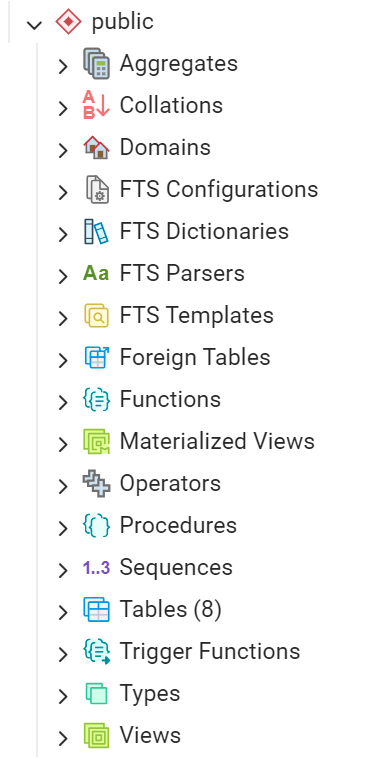
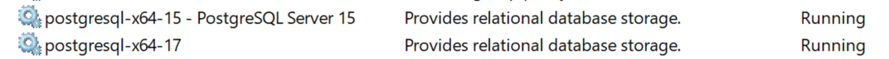
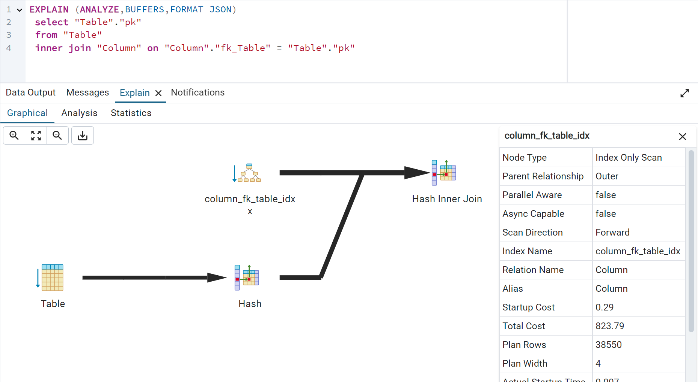
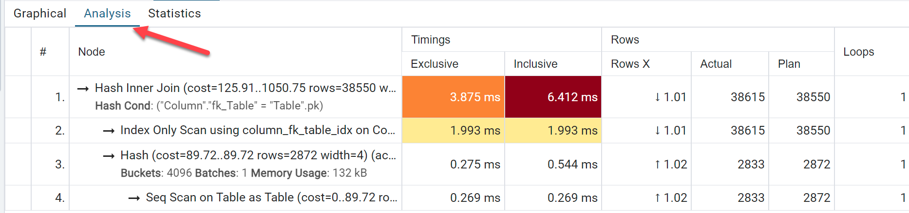

Tips and Tricks for developers moving to PostgreSQL
 Author: Eric Lendvai
Author: Eric Lendvai
Table of Contents
- Target Audience
- The Big Picture
- pgAdmin, a must have tool.
- psql
- The postgres Database
- Namespaces
- Field types
- PostgreSQL naming restrictions
- Maximum sizes
- Duplicate an entire database
- Database Size and Monitoring
- Adding columns default values
- DISTINCT ON
- Stored Functions
- Anonymous code blocks
- Connection Info
- Where is my IIF()? CASE to the rescue
- Cyan Audit
- DataWharf
- Running Multiple Versions of Postgresql
- Partitioning and Sharding
- Parallel Queries
- Ownership
- Multi-Tenancy
- Unlogged Tables
- Explain
- The Having Clause
- Foreign Data Wrapper
- Extensions
- Generating UUIDs
- Enumerations - Avoid them in most cases
Target Audience
- Software developer moving from MS SQL, MySQL (and forks) or Oracle to PostgreSQL.
- Software developer still new to PostgreSQL.
The Big Picture
Much
of the information presented here can also be found using ChatGPT;
however, the content in this document has been vetted for accuracy.
The
most challenging aspect of transitioning to PostgreSQL is knowing what
to look for. This article will provide valuable tips and tricks, along
with a list of important topics to be aware of.
pgAdmin, a must have tool.
pgAdmin
is a popular open-source administration and management tool for
PostgreSQL databases. It provides a graphical user interface (GUI) to
simplify database management tasks. Here are some of its primary uses:
Key Features of pgAdmin
1. Database Management: You can create, modify, and delete databases, schemas, tables, and other database objects easily through the interface.
2. Query Tool: pgAdmin includes a powerful query editor that supports SQL syntax highlighting, autocomplete, and the ability to run queries interactively.
3. Data Visualization: It provides tools for visualizing data, including graphical representations of query results and data export options. NOT A MODELING TOOL.
4. User Management: You can manage database users and roles, including assigning permissions and setting up authentication.
5. Backup and Restore: pgAdmin allows you to perform database backups and restores, providing options for both full and incremental backups.
6. Monitoring and Maintenance: It includes features for monitoring database performance, viewing logs, and managing scheduled tasks.
7. Multi-Platform Support: pgAdmin is available for various operating systems, including Windows, macOS, and Linux, making it accessible for a wide range of users.
8. Extensions and Plugins: You can extend pgAdmin's functionality through plugins and add-ons to tailor it to your specific needs.
Key Features of pgAdmin
1. Database Management: You can create, modify, and delete databases, schemas, tables, and other database objects easily through the interface.
2. Query Tool: pgAdmin includes a powerful query editor that supports SQL syntax highlighting, autocomplete, and the ability to run queries interactively.
3. Data Visualization: It provides tools for visualizing data, including graphical representations of query results and data export options. NOT A MODELING TOOL.
4. User Management: You can manage database users and roles, including assigning permissions and setting up authentication.
5. Backup and Restore: pgAdmin allows you to perform database backups and restores, providing options for both full and incremental backups.
6. Monitoring and Maintenance: It includes features for monitoring database performance, viewing logs, and managing scheduled tasks.
7. Multi-Platform Support: pgAdmin is available for various operating systems, including Windows, macOS, and Linux, making it accessible for a wide range of users.
8. Extensions and Plugins: You can extend pgAdmin's functionality through plugins and add-ons to tailor it to your specific needs.
Use the "CREATE script" option on the context menu to assist in creating code to create users, alter tables and many more.
Overall, pgAdmin is a comprehensive tool that makes it easier to interact with PostgreSQL databases, providing both beginners and experienced users with the features they need to manage their database environments effectively.
Problem with pgAdmin when running queries returning more than 1000 rows.
Please review the following article to change the max returned rows.
Alternative Applications:
There are several alternatives to pgAdmin for managing PostgreSQL databases. Here are a few popular ones:
This is a list from ChatGPT with the addition of PgManage.
1. PgManage https://www.commandprompt.com/products/pgmanage/
2. DBeaver:
A universal database tool that supports various databases, including
PostgreSQL. It offers a user-friendly interface and powerful features.
3. HeidiSQL: While primarily focused on MySQL, it also supports PostgreSQL and offers a lightweight, easy-to-use interface.
4. DataGrip: A commercial IDE from JetBrains that supports multiple database systems, including PostgreSQL. It has robust features for code completion, refactoring, and more.
5. TablePlus: A modern, native client with a clean interface that supports various databases, including PostgreSQL. It provides a good mix of simplicity and advanced features.
6. Adminer: A lightweight, single-file PHP application for database management. It’s simple to set up and use.
7. Navicat: A comprehensive database management tool that supports PostgreSQL and offers features like data modeling and reporting.
8. Postico: A modern PostgreSQL client for macOS, known for its intuitive interface and usability.
Each of these tools has its own strengths, so the best choice depends on your specific needs and preferences!
3. HeidiSQL: While primarily focused on MySQL, it also supports PostgreSQL and offers a lightweight, easy-to-use interface.
4. DataGrip: A commercial IDE from JetBrains that supports multiple database systems, including PostgreSQL. It has robust features for code completion, refactoring, and more.
5. TablePlus: A modern, native client with a clean interface that supports various databases, including PostgreSQL. It provides a good mix of simplicity and advanced features.
6. Adminer: A lightweight, single-file PHP application for database management. It’s simple to set up and use.
7. Navicat: A comprehensive database management tool that supports PostgreSQL and offers features like data modeling and reporting.
8. Postico: A modern PostgreSQL client for macOS, known for its intuitive interface and usability.
Each of these tools has its own strengths, so the best choice depends on your specific needs and preferences!
Additional Tool - Self Promotion
DataWharf - For database modeling, not a replacement of pgAdmin, but to help document, data mine, visualize databases.
psql
psql is the command-line interface (CLI) for interacting with PostgreSQL databases.
Could be useful if you are working on a non graphical platform like Ubuntu in docker.
The postgres Database
The "postgres" database typically refers to the default database that is created when you install PostgreSQL. Here's a brief overview:
Don't modify it, but use it as a current database when you want to alter the name or connection access to other databases.
1. Default Database: The "postgres" database serves as a general-purpose database for administration and testing. It’s often used by database administrators and developers for various tasks.
2. Role: It can be used to connect to the PostgreSQL server and perform administrative functions, run queries, and manage other databases.
3. Ownership: The database is usually owned by the default superuser role, often named "postgres."
4. Creation: While it’s there by default, you should create additional databases for your applications or projects as needed.
5. Use Cases: You might use the "postgres" database to experiment with SQL commands, test connections, or run maintenance tasks.
If you’re setting up a new application, it’s common to create a dedicated database for that specific application instead of using the default one.
Namespaces
In
PostgreSQL, schemas provide a way to organize and manage database
objects, such as tables, views, indexes, and functions. You can think of
a schema as a namespace within a database that allows you to group
related objects together, helping to avoid name conflicts and manage
permissions more effectively. It’s important to note that this is a
single-level structure; schemas cannot contain other schemas.
Key Points about Schemas:
1. Namespace: Each schema can contain objects with the same name, as long as they are in different schemas. For example, you could have two tables named "employees" in two different schemas.
2. Organization: Schemas help in logically grouping related database objects, which can make it easier to manage large databases.
Key Points about Schemas:
1. Namespace: Each schema can contain objects with the same name, as long as they are in different schemas. For example, you could have two tables named "employees" in two different schemas.
2. Organization: Schemas help in logically grouping related database objects, which can make it easier to manage large databases.
3. Type of Schema elements: Using pgAdmin we can list the Schema elements:

4. Permissions: You can set permissions at the schema level, allowing you to control access to the objects within the schema. This can enhance security by restricting access to sensitive data.
5. Default Schema: PostgreSQL has a default schema called "public." If you do not specify a schema when creating or accessing an object, it defaults to the "public" schema.
6. Creating Schemas: You can create a schema using the a safer command:
CREATE SCHEMA IF NOT EXISTS
schema_name7. Schema Search Path:
Setting and using the PostgreSQL schema search path allows you to
control which schemas are searched for objects when you reference them
without specifying a schema. Here’s how to set and use the search path
in PostgreSQL:
SET search_path TO schema1, schema2, public;
8. Safe method to use schemas: Always qualify the schema name in front of schema based element, also known as "Fully Qualified Name".
SELECT * FROM schema1.employees;
In this example, the table "employees" is created within the "schema1" schema.
In PostgreSQL, by default, all users have access to the "public"
schema. This can expose your database objects to unauthorized access or
manipulation.
For simple applications, such as web apps where only the application knows how to connect to the database, using the "public" schema may be acceptable.
For simple applications, such as web apps where only the application knows how to connect to the database, using the "public" schema may be acceptable.
In MySQL a schema is actually a database, NOT a namespace!
In
Oracle and Microsoft SQL Server (MSSQL), the concept of schemas exists
but with some differences in implementation and usage compared to
PostgreSQL.
In Oracle:
1. Schemas:
In Oracle, a schema is synonymous with a user. Each user has their own
schema, which contains all the database objects owned by that user
(tables, views, indexes, etc.). When you create an object as a user, it
resides in that user's schema.
2. Namespace: Just like in PostgreSQL, schemas in Oracle help avoid name conflicts. However, since each schema corresponds to a user, managing permissions and access can be more straightforward.
3. Accessing Objects: To access objects in another user's schema, you typically need to prefix the object name with the schema name (user name).
2. Namespace: Just like in PostgreSQL, schemas in Oracle help avoid name conflicts. However, since each schema corresponds to a user, managing permissions and access can be more straightforward.
3. Accessing Objects: To access objects in another user's schema, you typically need to prefix the object name with the schema name (user name).
In MSSQL: Unlike Oracle, schemas are not tied to users; multiple users can own objects within the same schema. SQL Server has a default schema (usually `dbo` for database owner) if none is specified when creating objects.
In
PostgreSQL, you can grant access rights to schemas using the `GRANT`
statement. This allows you to control which users or roles can access
and perform operations on the objects within a schema. Here’s how to do
it:
Granting Schema Access
1. Grant Usage on Schema: To allow a user or role to access objects within a schema, you need to grant usage on that schema. This does not automatically grant access to the objects within the schema but allows the user to refer to the schema.
GRANT USAGE ON SCHEMA schema_name TO username;
2. Grant Select on All Tables in Schema: To allow a user to select data from all tables in a schema, you can use the following command:
GRANT SELECT ON ALL TABLES IN SCHEMA schema_name TO username;
3. Grant Insert, Update, Delete: Similarly, you can grant other privileges like `INSERT`, `UPDATE`, or `DELETE` on all tables:
GRANT INSERT, UPDATE, DELETE ON ALL TABLES IN SCHEMA schema_name TO username;
4. Grant Privileges on Future Tables: To ensure that the user also has access to any future tables created in that schema, use the following command:
ALTER DEFAULT PRIVILEGES IN SCHEMA schema_name GRANT SELECT ON TABLES TO username;
Revoking Schema Access
If you need to revoke access at any time, you can use the `REVOKE` statement:
REVOKE USAGE ON SCHEMA schema_name FROM username;
REVOKE SELECT ON ALL TABLES IN SCHEMA schema_name FROM username;
Granting Schema Access
1. Grant Usage on Schema: To allow a user or role to access objects within a schema, you need to grant usage on that schema. This does not automatically grant access to the objects within the schema but allows the user to refer to the schema.
GRANT USAGE ON SCHEMA schema_name TO username;
2. Grant Select on All Tables in Schema: To allow a user to select data from all tables in a schema, you can use the following command:
GRANT SELECT ON ALL TABLES IN SCHEMA schema_name TO username;
3. Grant Insert, Update, Delete: Similarly, you can grant other privileges like `INSERT`, `UPDATE`, or `DELETE` on all tables:
GRANT INSERT, UPDATE, DELETE ON ALL TABLES IN SCHEMA schema_name TO username;
4. Grant Privileges on Future Tables: To ensure that the user also has access to any future tables created in that schema, use the following command:
ALTER DEFAULT PRIVILEGES IN SCHEMA schema_name GRANT SELECT ON TABLES TO username;
Revoking Schema Access
If you need to revoke access at any time, you can use the `REVOKE` statement:
REVOKE USAGE ON SCHEMA schema_name FROM username;
REVOKE SELECT ON ALL TABLES IN SCHEMA schema_name FROM username;
A username in PostgreSQL can be a role, aka group:
CREATE ROLE "Group1" WITH NOLOGIN NOSUPERUSER INHERIT NOCREATEDB CREATEROLE NOREPLICATION NOBYPASSRLS;
Field types
PostgreSQL
offers a wide variety of field types, and you can also create custom
types known as "Composite Types." In this discussion, we will focus on
the most commonly used field types, especially for those transitioning
from other SQL servers.
Characters
In PostgreSQL, there are several text field types designed to handle varying amounts of text data. Here are the main types:
Characters
In PostgreSQL, there are several text field types designed to handle varying amounts of text data. Here are the main types:
1. text:
- This type stores variable-length strings with no specific limit on size.
- Ideal for storing large amounts of text, such as articles or descriptions.
- The maximum size is 1 GB. This limit is in byte not characters. UTF8 has a variable number of bytes per characters, 1 to 4 bytes.
2. varchar(n): Equivalent to character varying.
- A variable-length character type with a specified maximum length `n`. `n` may not exceed 10,485,760 characters.
- Useful when you want to enforce a limit on the length of the text.
- For example, `VARCHAR(255)` can store up to 255 characters.
3. char(n): Equivalent to character.
- A fixed-length character type that always reserves space for `n` characters. `n` may not exceed 10,485,760 characters.
- If the input string is shorter than `n`, it is padded with spaces.
- Best used for storing data that has a consistent length, such as country codes.
Considerations:
- Errors:
If you attempt to store a string that exceeds the defined length in
CHAR(n) or VARCHAR(n), PostgreSQL will raise an error, and NOT store a
trimmed value.
- Performance: Generally, `TEXT` and `VARCHAR` are treated the same in terms of performance, but using `VARCHAR(n)` can enforce data integrity by limiting the length of entries.
- Usage: Choose `TEXT` for flexibility when dealing with potentially long text, `VARCHAR(n)` when you need constraints, and `CHAR(n)` for fixed-length requirements.
- Performance: Generally, `TEXT` and `VARCHAR` are treated the same in terms of performance, but using `VARCHAR(n)` can enforce data integrity by limiting the length of entries.
- Usage: Choose `TEXT` for flexibility when dealing with potentially long text, `VARCHAR(n)` when you need constraints, and `CHAR(n)` for fixed-length requirements.
Binary data
- They are used to store any bytes, not related to character encoding.
- Not be be confused with "bit" types, which are the equivalent of flags.
In PostgreSQL, the primary field types that can store binary data are:
1. bytea:
- This data type is specifically designed for storing binary data.
- It allows you to store raw byte sequences and is suitable for data such as images, files, or any other binary formats.
- The maximum size for a `BYTEA` field is 1 GB.
2. Large Objects (LOB):
- For larger binary data, you can use the Large Object feature.
- Large Objects are stored in a separate system table and can hold up to 2 GB per object.
- You interact with Large Objects using special functions (like `lo_*` functions) to read, write, and manage the data.
- These are global to a server, not individual database.
- They are used to store any bytes, not related to character encoding.
- Not be be confused with "bit" types, which are the equivalent of flags.
In PostgreSQL, the primary field types that can store binary data are:
1. bytea:
- This data type is specifically designed for storing binary data.
- It allows you to store raw byte sequences and is suitable for data such as images, files, or any other binary formats.
- The maximum size for a `BYTEA` field is 1 GB.
2. Large Objects (LOB):
- For larger binary data, you can use the Large Object feature.
- Large Objects are stored in a separate system table and can hold up to 2 GB per object.
- You interact with Large Objects using special functions (like `lo_*` functions) to read, write, and manage the data.
- These are global to a server, not individual database.
Since the system table used to store large object is not partitioned by
default and is then limited to 32 TB, I would recommend using BYTEA
fields instead of Large Objects and implement your own splitting of
content at 1 GB.
Numeric Types
PostgreSQL
provides several numeric field types to accommodate a variety of
numerical data needs. Here’s an overview of the different numeric types
available:
1. Integer Types:
- smallint: 2 bytes, range from -32,768 to 32,767.
- integer: 4 bytes, range from -2,147,483,648 to 2,147,483,647.
- bigint: 8 bytes, range from -9,223,372,036,854,775,808 to 9,223,372,036,854,775,807.
2. Floating-Point Types:
- real: 4 bytes, single-precision floating-point, with an approximate range of -3.14E-37 to 3.14E+37.
- double precision: 8 bytes, double-precision floating-point, with an approximate range of -1.70E-308 to 1.70E+308.
- numeric aka decimal: This type can store numbers with a user-defined precision and scale. For example, `numeric(10, 2)` can store up to 10 digits, with 2 digits after the decimal point. This type is ideal for exact numerical calculations, such as monetary values.
1. Integer Types:
- smallint: 2 bytes, range from -32,768 to 32,767.
- integer: 4 bytes, range from -2,147,483,648 to 2,147,483,647.
- bigint: 8 bytes, range from -9,223,372,036,854,775,808 to 9,223,372,036,854,775,807.
2. Floating-Point Types:
- real: 4 bytes, single-precision floating-point, with an approximate range of -3.14E-37 to 3.14E+37.
- double precision: 8 bytes, double-precision floating-point, with an approximate range of -1.70E-308 to 1.70E+308.
- numeric aka decimal: This type can store numbers with a user-defined precision and scale. For example, `numeric(10, 2)` can store up to 10 digits, with 2 digits after the decimal point. This type is ideal for exact numerical calculations, such as monetary values.
Only the numeric type will not truncate/round values.
3. Serial Types:
- serial: An auto-incrementing integer (4 bytes) that is essentially an integer with a sequence behind it.
- bigserial: An auto-incrementing bigint (8 bytes) for larger integer values.
Serial types are essentially integer types that are automatically associated with sequences.
- Use integer types for counting and whole numbers.
- Use floating-point types when you need approximate values and can tolerate some precision loss.
- Use numeric types when you require exact precision, such as in financial calculations.
- Use integer types for counting and whole numbers.
- Use floating-point types when you need approximate values and can tolerate some precision loss.
- Use numeric types when you require exact precision, such as in financial calculations.
Date and Time
PostgreSQL
offers several date and time field types to handle various temporal
data needs. Here’s a summary of the different date and time types:
1. Date Types:
- date: Stores the calendar date (year, month, day) without time. The range is from 4713 BC to 5874897 AD.
2. Time Types:
- time: Stores time of day (hour, minute, second) without time zone information. It can be defined with optional precision (e.g., `time(3)` for milliseconds). The range is from 00:00:00 to 24:00:00.
- time with time zone: Similar to `time`, but includes time zone information.
3. Timestamp Types:
- timestamp: Stores both date and time without time zone information. Like `time`, it can also have optional precision (e.g., `timestamp(3)` for milliseconds). The range is from 4713 BC to 5874897 AD.
- timestamp with time zone: Stores both date and time along with time zone information. It automatically converts to UTC for storage and converts back to the specified time zone when queried.
4. Interval Type:
- interval: Represents a span of time, which can be expressed in terms of years, months, days, hours, minutes, and seconds. This type is useful for calculating durations between dates and times.
1. Date Types:
- date: Stores the calendar date (year, month, day) without time. The range is from 4713 BC to 5874897 AD.
2. Time Types:
- time: Stores time of day (hour, minute, second) without time zone information. It can be defined with optional precision (e.g., `time(3)` for milliseconds). The range is from 00:00:00 to 24:00:00.
- time with time zone: Similar to `time`, but includes time zone information.
3. Timestamp Types:
- timestamp: Stores both date and time without time zone information. Like `time`, it can also have optional precision (e.g., `timestamp(3)` for milliseconds). The range is from 4713 BC to 5874897 AD.
- timestamp with time zone: Stores both date and time along with time zone information. It automatically converts to UTC for storage and converts back to the specified time zone when queried.
4. Interval Type:
- interval: Represents a span of time, which can be expressed in terms of years, months, days, hours, minutes, and seconds. This type is useful for calculating durations between dates and times.
Use the timestamp with time zone
when you need to record a date and time. You can also specify to record
up to 6 decimal point of a second. This is the safest way to not loose
temporal information.
For example to get as a string the elapsed time since the value in a timestamp with time zone field use the following:
to_char(now()-EnumValue.sysm,'DD "Days" HH24 "Hours" MI "Minutes" SS "Seconds"')
It is always possible to retrieve the value of a timestamp with time zone based on a particular time zone:
SELECT timezone('US/Pacific',"TableName"."DatetimeWithTimezonFieldName") AS "TimeInMyTimeZone", ....
To get the list of all supported time zone names, you can use the following:
SELECT name as "Name",
abbrev as "Abbreviation",
(EXTRACT(EPOCH FROM utc_offset)/60)::int as "UTCOffset",
is_dst as "DaylightSavingTime"
FROM pg_timezone_names
abbrev as "Abbreviation",
(EXTRACT(EPOCH FROM utc_offset)/60)::int as "UTCOffset",
is_dst as "DaylightSavingTime"
FROM pg_timezone_names
Boolean
1. boolean :
1. boolean :
- A boolean value takes 1 byte of storage.
- The boolean type can hold three distinct values: TRUE, FALSE or NULL if the field is NULLABLE.
- You can insert boolean values using: `TRUE` or `FALSE`, `'t'` or `'f'`, `1` (for true) and `0` (for false)
- PostgreSQL provides various functions and operators to work with boolean values, such as logical operators (`AND`, `OR`, `NOT`).
If you are using ODBC to connect to a PostgreSQL database and want to retrieve boolean fields not as numeric 1 and 0, add "BoolsAsChar=0;" in the connection string.
- The boolean type can hold three distinct values: TRUE, FALSE or NULL if the field is NULLABLE.
- You can insert boolean values using: `TRUE` or `FALSE`, `'t'` or `'f'`, `1` (for true) and `0` (for false)
- PostgreSQL provides various functions and operators to work with boolean values, such as logical operators (`AND`, `OR`, `NOT`).
If you are using ODBC to connect to a PostgreSQL database and want to retrieve boolean fields not as numeric 1 and 0, add "BoolsAsChar=0;" in the connection string.
UUID Universally Unique Identifier
The
UUID field type in PostgreSQL is a powerful option for generating
globally unique identifiers, making it useful for distributed systems
and applications where uniqueness across multiple tables or databases is
essential.
- A UUID occupies 16 bytes of storage.
- UUIDs are typically represented as 32 hexadecimal characters, displayed in five groups separated by hyphens, like this: `550e8400-e29b-41d4-a716-446655440000`.
- UUIDs are designed to be globally unique. The chance of generating the same UUID is extremely low, making them suitable for use as primary keys in distributed systems.
- PostgreSQL provides several built-in functions to generate UUIDs, such as:
-- uuid_generate_v1(): Timestamp and MAC address-based; predictable, but offers global uniqueness across space and time.
-- uuid_generate_v4(): Randomly generated; highly unique and unpredictable, suitable for privacy-sensitive applications.
--
uuid_generate_v7(): New to PostgreSQL 17. It provides a modern approach
that combines timestamp-based generation with randomness, making it
ideal for various applications needing unique and sortable identifiers.
- While UUIDs provide uniqueness, they are larger than traditional integer types, which may affect performance in some cases, especially for indexing.
- While UUIDs provide uniqueness, they are larger than traditional integer types, which may affect performance in some cases, especially for indexing.
JSON
PostgreSQL
provides powerful JSON and JSONB data types to store and manipulate
JSON data, with JSONB being the more efficient option for most use cases
due to its binary storage format and support for indexing. When
deciding between them, consider your application's specific needs for
performance and functionality.
There are two primary JSON-related data types:
1. json
- The `JSON` data type stores JSON data as text.
- It validates the input to ensure that it is well-formed JSON before storing it.
- When you query JSON data stored in this format, it can be less efficient for certain operations compared to the `JSONB` type because it requires parsing each time you access it.
2. jsonb
- The `JSONB` data type stores JSON data in a binary format.
- It is optimized for storage and query performance. JSONB supports indexing, making it faster for certain types of queries.
- Allows for efficient querying using operators and functions.
- Supports indexing, enabling faster lookups.
- Automatically eliminates duplicate keys and orders the keys, which can save space.
- JSONB is typically preferred over JSON when you need to perform complex queries or work with large datasets.
1. json
- The `JSON` data type stores JSON data as text.
- It validates the input to ensure that it is well-formed JSON before storing it.
- When you query JSON data stored in this format, it can be less efficient for certain operations compared to the `JSONB` type because it requires parsing each time you access it.
2. jsonb
- The `JSONB` data type stores JSON data in a binary format.
- It is optimized for storage and query performance. JSONB supports indexing, making it faster for certain types of queries.
- Allows for efficient querying using operators and functions.
- Supports indexing, enabling faster lookups.
- Automatically eliminates duplicate keys and orders the keys, which can save space.
- JSONB is typically preferred over JSON when you need to perform complex queries or work with large datasets.
Arrays
In
PostgreSQL, the array data type allows you to store multiple values of
the same data type within a single column. Additionally, all PostgreSQL
data types can be defined as arrays.
For example: uuid[] would allow to store a list of uuids.
This feature is not available in other SQL backend and makes it easier
to break the 3rd normalization rule. I would highly recommend not using
arrays.
PostgreSQL has several functions to deal with arrays: array_length,unnest,any,array_append,array_remove ...
Indexing
can not be done on an array, only to one of its element. There is no
sorting inside arrays. AVOID this feature if used to replace an entire
table or a many to many relationship.
Enumerations
In
PostgreSQL, enumerations (enums) are a special data type that allows
you to define a column with a fixed set of possible values. This can be
particularly useful for situations where a column should only contain a
specific set of predefined values, enhancing data integrity and
readability.
- An enumeration type is created using the `CREATE TYPE` statement, where you specify the name of the enum and its possible values.
- Once an enum type is defined, the values it can take are fixed. This means that any column of this type can only contain one of the specified values, ensuring consistency.
- Using enums helps prevent invalid data from being inserted into the database, as only the predefined values are allowed.
- Enums improve the readability of your database schema and queries, as the defined values often convey meaning more clearly than generic strings or integers.
- Removing values from an enum is not directly supported, but you can work around it by creating a new enum type and migrating the data.
- An enumeration type is created using the `CREATE TYPE` statement, where you specify the name of the enum and its possible values.
- Once an enum type is defined, the values it can take are fixed. This means that any column of this type can only contain one of the specified values, ensuring consistency.
- Using enums helps prevent invalid data from being inserted into the database, as only the predefined values are allowed.
- Enums improve the readability of your database schema and queries, as the defined values often convey meaning more clearly than generic strings or integers.
- Removing values from an enum is not directly supported, but you can work around it by creating a new enum type and migrating the data.
-
If you intend to create a multi-language application you may want to
avoid enumeration and create your own association of numbers or code to
text/description.
PostgreSQL naming restrictions
The following is a partial list of naming restrictions:
- Names of tables, columns, schemas, indexes, enumerations, enumeration values ... can be up to 63 characters long. If you exceed this limit, PostgreSQL will truncate the name.
- By default, names are case-insensitive and are folded to lowercase. For example,
MyTableandmytablerefer to the same table. - If you want to preserve the case sensitivity, you must enclose the name in double quotes (e.g.,
"MyTable"). - While it’s technically possible to use special characters in names by enclosing them in double quotes, it's not recommended due to potential confusion and portability issues.
- Table, column, schema, index, enumeration names must begin with a letter or an underscore.
- Table names must be unique within its schema (namespace). You can have tables with the same name in different schemas.
- Column names must be unique within the same table, but the same column name can exist in different tables.
- Index names must be unique within the same schema. You can have indexes with the same name in different schemas.
Please note that DataWharf will optionally issue a warning if these restrictions are not met.
Maximum sizes
In PostgreSQL, various maximum sizes apply to different data types and structures.
For a complete list of limits, refer to https://www.postgresql.org/docs/current/limits.html
Here are the key maximum sizes you should be aware of:
1. Columns per Table: 1600
1. Columns per Table: 1600
2. Any Identifiers, like Table, Column, Index, enumeration names: 63 characters.
3. Column Type Limits: Please refer to the "Field Types" section of this document.
3. Column Type Limits: Please refer to the "Field Types" section of this document.
4. Row Size: The maximum size of a single row is 1.6 TB, but this is subject to the maximum size of individual columns and other factors.
Duplicate an entire database
As
developers, we often wish we could reset a database to a specific point
in time. However, the backup and restore process can be time-consuming.
To work around this issue, there is a method for copying or duplicating a database that operates at the speed of physically copying an entire database.
The key is to create a copy of the database on the same server, leveraging the multi-tenancy feature. A significant limitation of this process is that no connections may exist on the database being copied. Fortunately, in PostgreSQL, we can prevent new connections by setting the "ALLOW_CONNECTIONS" parameter to false on the source database and then terminating all existing connections.
Once the database has no active connections, it can be used as a "TEMPLATE" for creating a new database. After the new copy has been created, we can re-enable connections on the source database.
All the steps outlined below can be performed using pgAdmin in a query entry form that is NOT connected to the source database. The easiest approach is to use the "postgres" database as our working area.
To work around this issue, there is a method for copying or duplicating a database that operates at the speed of physically copying an entire database.
The key is to create a copy of the database on the same server, leveraging the multi-tenancy feature. A significant limitation of this process is that no connections may exist on the database being copied. Fortunately, in PostgreSQL, we can prevent new connections by setting the "ALLOW_CONNECTIONS" parameter to false on the source database and then terminating all existing connections.
Once the database has no active connections, it can be used as a "TEMPLATE" for creating a new database. After the new copy has been created, we can re-enable connections on the source database.
All the steps outlined below can be performed using pgAdmin in a query entry form that is NOT connected to the source database. The easiest approach is to use the "postgres" database as our working area.
PostgreSQL also has command to rename a database, with no active connections.
The "CREATE DATABASE" command may not be called from stored procedure, meaning execute the following steps manually.
The following example outlines the steps to copy a database named "DataWharf" to a new database named "DataWharf_backup_1":
ALTER DATABASE "DataWharf" WITH ALLOW_CONNECTIONS false;SELECT pg_terminate_backend(pg_stat_activity.pid)FROM pg_stat_activityWHERE datname = 'DataWharf'AND pid <> pg_backend_pid();CREATE DATABASE "DataWharf_backup_1" WITH TEMPLATE "DataWharf";ALTER DATABASE "DataWharf" WITH ALLOW_CONNECTIONS true;-- Example of renaming a databaseALTER DATABASE "DataWharf_backup_1" RENAME TO "DataWharf";
Database Size and Monitoring
When you need to find out the total size of a database use the pg_database_size() function.
For example to get the size of the database DataWharf, in an user friendly format (Mb/Gb) use the following:
SELECT pg_size_pretty(pg_database_size('DataWharf'));
To
avoid write locks, PostgreSQL adds any changes as a tuple of data (also
known as a row in a table) and marks the previous version for deletion
once there are no active sessions that need to access it. The removal of
old (or dead) tuples is handled through the vacuum process.
The
following query can be used to view the list of tables in the database,
along with their number of rows/"live tuples" and "dead tuples". The
ratio of "live" to "dead" tuples can be considered an indicator of
fragmentation. When a table exhibits excessive fragmentation, a vacuum
operation should be performed, if it is not already being executed
automatically.
SELECT pg_stat_user_tables.schemaname AS namespace_name, pg_stat_user_tables.relname AS table_name, pg_stat_user_tables.n_live_tup AS live_tuple, pg_stat_user_tables.n_dead_tup AS dead_tuple, CASE WHEN pg_stat_user_tables.n_live_tup = 0 THEN 0.00 ELSE round((pg_stat_user_tables.n_dead_tup::numeric / pg_stat_user_tables.n_live_tup::numeric) * 100,2) END AS framentation_percentage FROM pg_stat_user_tables ORDER BY namespace_name,table_name
Adding columns default values
Adding
a column with a default value in PostgreSQL can be slower than adding a
column without a default value. This is primarily due to the way
PostgreSQL handles the addition of a default value:
1. Column without Default: When you add a column without a default value, PostgreSQL simply adds the column definition to the table's metadata. No existing rows need to be modified, so this operation is generally very fast.
2. Column with Default: When you add a column with a default value, PostgreSQL must update all existing rows to set the default value for that column. This means that the database has to write to the storage for each row, which can significantly increase the time it takes to perform the operation, especially on large tables.
If you're dealing with a large table and performance is a concern, you can use the "ALTER TABLE ... ADD COLUMN" command to add the column without a default value first, and then subsequently set the default value. For example:
1. Add the column without a default:
ALTER TABLE your_table
ADD COLUMN new_column INTEGER;
2. Update existing rows if needed:
UPDATE your_table
SET new_column = 0
WHERE new_column IS NULL;
3. Finally, set the default value for future inserts:
ALTER TABLE your_table
ALTER COLUMN new_column SET DEFAULT 0;
This approach minimizes the impact on performance during the initial column addition.
1. Column without Default: When you add a column without a default value, PostgreSQL simply adds the column definition to the table's metadata. No existing rows need to be modified, so this operation is generally very fast.
2. Column with Default: When you add a column with a default value, PostgreSQL must update all existing rows to set the default value for that column. This means that the database has to write to the storage for each row, which can significantly increase the time it takes to perform the operation, especially on large tables.
If you're dealing with a large table and performance is a concern, you can use the "ALTER TABLE ... ADD COLUMN" command to add the column without a default value first, and then subsequently set the default value. For example:
1. Add the column without a default:
ALTER TABLE your_table
ADD COLUMN new_column INTEGER;
2. Update existing rows if needed:
UPDATE your_table
SET new_column = 0
WHERE new_column IS NULL;
3. Finally, set the default value for future inserts:
ALTER TABLE your_table
ALTER COLUMN new_column SET DEFAULT 0;
This approach minimizes the impact on performance during the initial column addition.
DISTINCT ON
In
PostgreSQL, both "DISTINCT" and "DISTINCT ON" clauses are used to
eliminate duplicate rows from query results, but they function
differently and serve different purposes.
As in
all other SQL backends the "DISTINCT" clause is used to return unique
rows from the result set based on all columns selected.
SQL
Queries in PostgreSQL also have a "DISTINCT ON" clause that allows you
to specify one or more columns to determine uniqueness while returning
the first row of each set of duplicates based on the specified ordering,
therefore requiring the "ORDER BY" clause.
For example, to list all the latest released Books for all Authors with the actual released data we can use the following query:
select distinct on (Author_Name,Book_Title) "Author"."Name" as Author_Name, "Book"."Title" as Book_Title, "Book"."ReleaseDate" as Book_ReleaseDate from "Author" inner join "Book" on "Book"."fk_Author" = "Author"."pk" order by Author_Name,Book_Title,Book_ReleaseDate desc
Stored Functions
In
PostgreSQL, stored functions are database objects that encapsulate a
sequence of SQL statements or operations that can be executed as a
single unit. They are useful for encapsulating complex business logic,
simplifying code reuse, and improving performance through reduced
network traffic.
Key Features
Key Features
1. Multiple Languages: PostgreSQL supports nearly 20 programming languages for creating stored functions and procedures. The primary language is PL/pgSQL, which facilitates more complex programming constructs such as loops, conditional statements, and error handling. This capability allows developers to implement logic that extends beyond simple SQL queries. Some of these languages are classified as "trusted," while others are deemed "untrusted."
Trusted languages
have restricted access to the system and do not permit potentially
harmful operations. Functions written in trusted languages can be
executed without special security considerations, as PostgreSQL verifies
that the code does not perform actions that could compromise the
database or its data integrity. Examples of trusted languages include
PL/pgSQL, Tcl, and JavaScript.
Untrusted languages
provide greater freedom regarding what can be executed, including
operations that may affect the operating system or the database server
itself. Functions written in untrusted languages can perform arbitrary
actions, which could pose security risks. Examples of untrusted
languages include Python, Perl, and Java.
List of currently supported languages: https://wiki.postgresql.org/wiki/PL_Matrix
Hosted versions of PostgreSQL, such as those offered by AWS, typically support only certain trusted languages.
2. Multiple Return Types: Stored functions in PostgreSQL can return various types, including scalar values, composite types (like rows), and sets of values (using the `RETURNS SETOF` syntax).
3. Transactional Control: Functions in PostgreSQL can manage transactions using `BEGIN`, `COMMIT`, and `ROLLBACK` statements. This allows for finer control over how changes are applied to the database.
4. Security and Permissions: Functions in PostgreSQL can execute with the permissions of the user who defined (or owned) them, enhancing security by allowing controlled access to database operations.
Using stored functions with the "SECURITY DEFINER" clause can shield a user from direct access to a table while still providing a mechanism to update it. In this case, a stored function acts like an API.
5. Volatility Categories: Functions can be marked as `IMMUTABLE`, `STABLE`, or `VOLATILE`, which informs the query planner how to optimize calls to the function based on its behavior.
6. Support for Overloading: PostgreSQL allows multiple functions with the same name but different parameter types, enabling cleaner and more intuitive interfaces.
To remove a function, it needs to match its list of parameters.
7. More complex tasks: PostgreSQL’s functions can perform more complex tasks than in many other databases, thanks to support for advanced features like window functions and common table expressions (CTEs).
7. More complex tasks: PostgreSQL’s functions can perform more complex tasks than in many other databases, thanks to support for advanced features like window functions and common table expressions (CTEs).
FYI: Window functions
in PostgreSQL are advanced functions that perform calculations across a
set of table rows that are somehow related to the current row. Unlike
regular aggregate functions, which collapse rows into a single output
row, window functions return a value for each row in the result set
while maintaining the individual rows.
Anonymous code blocks
In
PostgreSQL, you can execute anonymous code blocks using the"DO"
statement. This allows you to run procedural code without needing to
create a function. Here's the basic syntax and a simple example:
Basic Syntax
DO $$
Basic Syntax
DO $$
BEGIN
-- Your code here
END $$;
-- Your code here
END $$;
"$$" could be any string, but should not be part of you code except for the last delimiter.
Notes
- The anonymous block runs in the context of a transaction, meaning if any error occurs, the whole block can be rolled back.
- It's useful for performing one-time operations or testing logic without creating a permanent function.
- The anonymous block runs in the context of a transaction, meaning if any error occurs, the whole block can be rolled back.
- It's useful for performing one-time operations or testing logic without creating a permanent function.
Example
DO $$DECLARE my_value INTEGER := 10;BEGINIF my_value > 5 THEN INSERT INTO my_table (column1) VALUES ('Value greater than 5');ELSE INSERT INTO my_table (column1) VALUES ('Value 5 or less');END IF;END $$;
1. DO $$: Starts the anonymous code block. The `$$` is a delimiter for the code.
2. DECLARE: Starts the section where variable can be defined.
3. BEGIN...END: Encloses the block of procedural code and represents a transaction.
4. SQL Statements: You can include any valid SQL statements inside the block, such as "INSERT", "UPDATE", or even control structures like loops and conditionals.
2. DECLARE: Starts the section where variable can be defined.
3. BEGIN...END: Encloses the block of procedural code and represents a transaction.
4. SQL Statements: You can include any valid SQL statements inside the block, such as "INSERT", "UPDATE", or even control structures like loops and conditionals.
Connection Info
The following technique is available in nearly all SQL backends, yet it remains underutilized by many developers: you can assign a name to an active connection.
Why
is this useful? For example, if the name you assign includes an
embedded identifier linked to a history log of connections - such as the
application user, version information, OS name and version, or any
other relevant local information - you can provide your IT and support
teams with more valuable insights.
In PostgreSQL, once the connection is established, simply execute the following statement:
set application_name = '<some name>';
To list all current connections to a database, you can run the following query:
SELECT application_name FROM pg_stat_activity WHERE datname = '<DatabaseName>';
Where is my IIF()? CASE to the rescue
PostgreSQL
does not have the IIF() function that MSSQL and Oracle do, but we can
achieve similar functionality by using the CASE statement.
The
"CASE" statement in PostgreSQL is a powerful tool that allows you to
perform conditional logic directly within your SQL queries. It evaluates
a series of conditions and returns a value based on the first condition
that evaluates to true. It can be used in "SELECT", "UPDATE", "ORDER
BY", and other SQL clauses.
To make a true
equivalent to
IIF(<Condition>,<ValueOnTrue>,<ValueOnFalse>) we can
use the CASE statement as represented by the following:
SELECT CASE WHEN <Condition> THEN <ValueOnTrue> ELSE <ValueOnFalse> END AS column_alias_nameFROM your_table;
There are two types of "CASE" statements: simple and searched.
1. Simple CASE Statement: compares an expression to a series of values.
1. Simple CASE Statement: compares an expression to a series of values.
CASE expression
WHEN value1 THEN result1
WHEN value2 THEN result2
...
ELSE result_default
END
WHEN value1 THEN result1
WHEN value2 THEN result2
...
ELSE result_default
END
2. Searched CASE Statement: evaluates a series of boolean expressions.
CASE
WHEN condition1 THEN result1
WHEN condition2 THEN result2
...
ELSE result_default
END
Features
WHEN condition1 THEN result1
WHEN condition2 THEN result2
...
ELSE result_default
END
Features
- Multiple Conditions: You can include as many "WHEN" clauses as needed.
- Else Clause: The "ELSE" clause is optional. If none of the conditions are met and "ELSE" is omitted, "NULL" will be returned.
- Return Types: The return type of a "CASE" expression is determined by the types of the return values. PostgreSQL tries to implicitly convert them to a common type.
- Else Clause: The "ELSE" clause is optional. If none of the conditions are met and "ELSE" is omitted, "NULL" will be returned.
- Return Types: The return type of a "CASE" expression is determined by the types of the return values. PostgreSQL tries to implicitly convert them to a common type.
Examples
-- Example of a Simple CASE StatementSELECT employee_id, CASE department_id WHEN 1 THEN 'Sales' WHEN 2 THEN 'Marketing' WHEN 3 THEN 'Engineering' ELSE 'Other' END AS department_nameFROM employees;--Example of a Searched CASE StatementSELECT employee_id, salary, CASE WHEN salary > 80000 THEN 'High' WHEN salary BETWEEN 50000 AND 80000 THEN 'Medium' ELSE 'Low' END AS salary_categoryFROM employees;
Cyan Audit
Cyan
Audit is a PostgreSQL utility providing comprehensive and
easily-searchable logs of DML (INSERT/UPDATE/DELETE) activity in your
database.
Cyan Audit is not a typical extension, since you don't use the "CREATE EXTENSION" command. It is 100% trigger based.
It is most useful for developers to help track what is being changed.
Even
though it is an old extensions (2018-05-24), written entirely in
pl/pgsql and is trigger-based, it is safe and can be used on hosted
versions of PostgreSQL like AWS.
Main documentation available at https://pgxn.org/dist/cyanaudit/doc/cyanaudit.html
Source code at https://bitbucket.org/neadwerx/cyanaudit/src/master/
To install, you can simply execute the file cyanaudit--2.2.1.sql in pgAdmin.
Requirement, all tables need a primary key, preferably an integer or big-integer.
To activate Cyan Audit on the public schema:
select cyanaudit.fn_update_audit_fields('public')
To remove the audit trail triggers in Cyan Audit:
DO $$DECLARE v_record record; v_sqlcommand text;BEGIN FOR v_record IN SELECT DISTINCT 'DROP TRIGGER IF EXISTS tr_log_audit_event on public."' || event_object_table || '";' as sqlcommand from information_schema.triggers where trigger_name = 'tr_log_audit_event' LOOP v_sqlcommand := v_record.sqlcommand; RAISE NOTICE 'sqlcommand = %',v_sqlcommand; EXECUTE v_sqlcommand; END LOOP;END;$$;
Example of a query to view the Cyan Audit Log:
SELECT ae.recorded, ae.uid, cyanaudit.fn_get_email_by_uid(ae.uid) AS user_email, ae.txid, att.label AS description, CASE WHEN af.table_schema::text = ANY (current_schemas(true)) THEN af.table_name::text ELSE (af.table_schema::text || '.'::text) || af.table_name::text END::character varying AS table_name, af.column_name, ae.pk_vals, ae.row_op AS op, ae.old_value, ae.new_value FROM cyanaudit.tb_audit_event ae -- JOIN cyanaudit.tb_audit_field af USING (audit_field) JOIN cyanaudit.tb_audit_field af ON af.audit_field = ae.audit_field LEFT JOIN cyanaudit.tb_audit_transaction_type att USING (audit_transaction_type)--WHERE ae.recorded >= (NOW() - INTERVAL '10 hour')--WHERE af.table_name = 'Column'--AND ae.pk_vals[1] = '171937'--AND att.label = 'SomeText' ORDER BY ae.recorded DESC, af.table_name, af.column_name;--LIMIT 100
DataWharf
DataWharf is a Database Designer/Modeler/Analyzer Tool web application.
- 100% free and open-source.
- It combined visualization and active data dictionary features.
- It can be installed using Docker Desktop.
- It can be used to migrate schemas from MSSQL, MySQL, Oracle to PostgreSQL in minutes.
For more information go to https://github.com/EricLendvai/DataWharf or http://datawharf.org
Running Multiple Versions of Postgresql
As
a developer, you often need to experiment with a new version of
PostgreSQL or maintain an older version. If you want to run multiple
versions of PostgreSQL locally, you can either install them in Docker
containers or directly on your host operating system.
To
ensure you can run more than one version simultaneously, make sure to
select a different port for each installation during the setup process.
The default port is 5432; for example, you could assign port 5437 for
PostgreSQL 17.
On Windows, the installation
program will register a Windows Service for each version. Fortunately,
each version has a unique service name.
Here’s an example of PostgreSQL versions 15 and 17 being installed concurrently on localhost.

Backup / Restore
When transferring databases between different versions of PostgreSQL,
always use the pg_dump and pg_restore from the newest version of
PostgreSQL.
pg_dump is a utility for backing up
a PostgreSQL database. It makes consistent backups even if the database
is being used concurrently.
pg_dump does not block other users accessing the database (readers or
writers). While this means the backup may not reflect an exact snapshot
of the database—since other users can change the data simultaneously—it
is still a solid solution for your local installations.
Create an empty database on the target PostgreSQL server before you restore into.
For example:
CREATE DATABASE "DataWharf" WITH OWNER = postgres ENCODING = 'UTF8';
Use
the "--format=c" option. It is a custom-format archive suitable for
input into pg_restore. This format is also compressed by default.
Example of pg_dump and pg_restore commands used from a Windows command prompt:
"C:\Program Files\PostgreSQL\17\bin\pg_dump" -hlocalhost -Upostgres -p5435 -dDataWharf --format=c --file=C:\Postgresql_backup\Postgresql_15_DataWharf_2024_10_18_001.dmp"C:\Program Files\PostgreSQL\17\bin\pg_restore" -hlocalhost -Upostgres -p5437 -dDataWharf --format=c C:\Postgresql_backup\Postgresql_15_DataWharf_2024_10_18_001.dmp
Partitioning and Sharding
In PostgreSQL, Partitioning and Sharding are both techniques used to manage and scale large datasets, but they serve different purposes and operate in distinct ways.
Partitioning
Partitioning refers to dividing a large table into smaller, more manageable pieces called partitions.
- Range Partitioning: Divides data based on a range of values, like dates.
- List Partitioning: Segments data based on a predefined list of values.
- Hash Partitioning: Distributes data across partitions using a hash function.
Partitioning helps with maintenance tasks (like vacuuming or indexing) and can improve query performance by allowing PostgreSQL to scan only relevant partitions or taking advantage of parallel queries.
Partitioning
Partitioning refers to dividing a large table into smaller, more manageable pieces called partitions.
- Range Partitioning: Divides data based on a range of values, like dates.
- List Partitioning: Segments data based on a predefined list of values.
- Hash Partitioning: Distributes data across partitions using a hash function.
Partitioning helps with maintenance tasks (like vacuuming or indexing) and can improve query performance by allowing PostgreSQL to scan only relevant partitions or taking advantage of parallel queries.
PostgreSQL's support for parallel queries can significantly improve performance when working with partitioned tables.
Example for creating a table with partitions:
CREATE TABLE sales (
id SERIAL PRIMARY KEY,
sale_date DATE NOT NULL,
amount NUMERIC
) PARTITION BY RANGE (sale_date);
id SERIAL PRIMARY KEY,
sale_date DATE NOT NULL,
amount NUMERIC
) PARTITION BY RANGE (sale_date);
Indexes: You can create indexes on partitions, but remember that each partition is treated as a separate table.
Maintenance: Keep in mind partition management tasks such as adding new partitions for future data.
Benefits of Parallel Queries on Partitioned Tables
1. Work Distribution: When a query is executed against a partitioned table, PostgreSQL can divide the work among multiple CPU cores. Each partition can be processed independently, which allows for faster execution of large queries.
2. Selective Scanning: If the query targets specific partitions (e.g., using a `WHERE` clause that filters on partitioned columns), PostgreSQL can only scan the relevant partitions. This reduces the amount of data processed in parallel, making it more efficient.
3. Aggregate Operations: Operations like aggregations and joins can also benefit from parallel execution. Each partition can compute its results independently before combining them, which speeds up the overall processing.
4. Data Locality: Partitioning can enhance cache utilization, as data related to specific queries may be stored closer together, improving performance during parallel scans.
In summary, using partitioned tables in conjunction with parallel query execution can lead to significant performance improvements in PostgreSQL, especially for large datasets and complex queries.
Sharding
Sharding involves distributing a database across multiple servers or instances, each containing a subset of the total data. This is often done to enhance performance and scalability, particularly for very large datasets or high-traffic applications. Sharding typically requires application-level logic to route queries to the correct shard.
Key aspects of sharding include:
- Horizontal Scaling: Each shard holds a portion of the data (e.g., users, transactions) rather than splitting a single table.
- Decentralization: Each shard can operate independently, potentially on different hardware.
In summary, partitioning is about dividing tables within a single database, while sharding is about spreading the data across multiple databases or servers. Both techniques can enhance performance and manageability, but they cater to different scaling needs.
Sharding involves distributing a database across multiple servers or instances, each containing a subset of the total data. This is often done to enhance performance and scalability, particularly for very large datasets or high-traffic applications. Sharding typically requires application-level logic to route queries to the correct shard.
Key aspects of sharding include:
- Horizontal Scaling: Each shard holds a portion of the data (e.g., users, transactions) rather than splitting a single table.
- Decentralization: Each shard can operate independently, potentially on different hardware.
In summary, partitioning is about dividing tables within a single database, while sharding is about spreading the data across multiple databases or servers. Both techniques can enhance performance and manageability, but they cater to different scaling needs.
Parallel Queries
This
topic is more relevant for Database Administrators than for Developers,
but understanding how PostgreSQL leverages parallel queries is crucial.
While no code changes are necessary, this feature can still impact your
development process. It’s essential to use the latest stable version of
PostgreSQL, as the query engine is continuously being enhanced to
maximize the benefits of parallel queries.
Enabling Parallel Queries
To take advantage of parallel query execution, ensure the following settings in your PostgreSQL configuration:
- max_parallel_workers_per_gather: This setting controls how many parallel workers can be used for a single query. Increasing this can improve performance but may impact other concurrent workloads.
- max_parallel_workers: This is the total number of workers available for parallel processing. Adjusting this value allows for more parallelism across your database.
- parallel_setup_cost and parallel_tuple_cost: These cost parameters influence the planner's decision to use parallel execution. Lowering these values may make PostgreSQL more likely to use parallelism.
Considerations
- Overhead: While parallel processing can improve performance, it also incurs overhead. For smaller datasets or simpler queries, the cost of managing parallel workers may outweigh the benefits.
- Monitoring: Use PostgreSQL's built-in statistics and logging to monitor the effectiveness of parallel queries and adjust configurations accordingly.
To take advantage of parallel query execution, ensure the following settings in your PostgreSQL configuration:
- max_parallel_workers_per_gather: This setting controls how many parallel workers can be used for a single query. Increasing this can improve performance but may impact other concurrent workloads.
- max_parallel_workers: This is the total number of workers available for parallel processing. Adjusting this value allows for more parallelism across your database.
- parallel_setup_cost and parallel_tuple_cost: These cost parameters influence the planner's decision to use parallel execution. Lowering these values may make PostgreSQL more likely to use parallelism.
Considerations
- Overhead: While parallel processing can improve performance, it also incurs overhead. For smaller datasets or simpler queries, the cost of managing parallel workers may outweigh the benefits.
- Monitoring: Use PostgreSQL's built-in statistics and logging to monitor the effectiveness of parallel queries and adjust configurations accordingly.
Ownership
In
PostgreSQL, several database objects have an ownership attribute, which
indicates who has the ability to manage or control the object. The main
objects with ownership attributes include:
1. Schemas: Each schema has an owner. The owner of a schema can perform operations on all objects within that schema, including altering tables.
2. Tables: Each table has an owner, typically the user who created it. The owner has full privileges to perform actions like altering or dropping the table.
3. Indexes: Indexes are owned by the same user who owns the table they are associated with.
4. Sequences: Each sequence in PostgreSQL has an owner, which typically corresponds to the user who created it.
5. Views: Views are owned by the user who creates them, and the owner can manage the view’s structure and permissions.
6. Functions and Procedures: Functions and stored procedures have ownership attributes as well, with the owner having control over their execution and permissions.
7. Foreign Tables: In the context of foreign data wrappers, foreign tables also have ownership.
8. Materialized Views: These views, which store the results of a query physically, have owners as well.
Ownership in PostgreSQL is a key concept for managing security and access control, as the owner of an object can grant or revoke privileges to other users or roles.
1. Schemas: Each schema has an owner. The owner of a schema can perform operations on all objects within that schema, including altering tables.
2. Tables: Each table has an owner, typically the user who created it. The owner has full privileges to perform actions like altering or dropping the table.
3. Indexes: Indexes are owned by the same user who owns the table they are associated with.
4. Sequences: Each sequence in PostgreSQL has an owner, which typically corresponds to the user who created it.
5. Views: Views are owned by the user who creates them, and the owner can manage the view’s structure and permissions.
6. Functions and Procedures: Functions and stored procedures have ownership attributes as well, with the owner having control over their execution and permissions.
7. Foreign Tables: In the context of foreign data wrappers, foreign tables also have ownership.
8. Materialized Views: These views, which store the results of a query physically, have owners as well.
Ownership in PostgreSQL is a key concept for managing security and access control, as the owner of an object can grant or revoke privileges to other users or roles.
In PostgreSQL, an owner can be a "Group Role," which provides
group-like behavior. In pgAdmin, you create a "Group Role" in the same
way as you create a user ("Login Role"), but you set "Can Login" to
false and do not assign a password. After creating the "Group Role", you
can assign multiple users ("Login Roles") to it.
A user ("Login Role") or group ("Group Role") can be flagged as a
"Superuser". As the name implies anything can be done by a Superuser.
Sequences are often used to generate unique identifiers for primary
keys. When a sequence is tied to a table, you generally cannot change
its ownership directly. You will need to "Drop and Recreate" the
existing sequence.
The following are code example for changing element ownership
-- To change ownership of all tables in the public schema (namespace):DO $$DECLARE r RECORD; v_SchemaName TEXT := 'public'; v_NewOwnerName TEXT := 'datawharf';BEGIN FOR r IN SELECT schemaname,tablename FROM pg_tables WHERE schemaname = v_SchemaName LOOP EXECUTE format('ALTER TABLE %I.%I OWNER TO %I', r.schemaname, r.tablename, v_NewOwnerName); END LOOP;END $$;-- To change ownership of all sequences in the public schema (namespace):DO $$DECLARE r RECORD; v_SchemaName TEXT := 'public'; v_NewOwnerName TEXT := 'datawharf';BEGIN FOR r IN SELECT schemaname,sequencename FROM pg_sequences WHERE schemaname = v_SchemaName LOOP EXECUTE format('ALTER SEQUENCE %I.%I OWNER TO %I', r.schemaname, r.sequencename, v_NewOwnerName); END LOOP;END $$;-- To change ownership of all views in the public schema (namespace):DO $$DECLARE r RECORD; v_SchemaName TEXT := 'store'; v_NewOwnerName TEXT := 'datawharf';BEGIN FOR r IN SELECT table_schema as schemaname, table_name as viewname FROM information_schema.views WHERE table_schema = v_SchemaName LOOP EXECUTE format('ALTER VIEW %I.%I OWNER TO %I', r.schemaname, r.viewname, v_NewOwnerName); END LOOP;END $$;-- To change ownership of all stored functions and stored procedures in the public schema (namespace):DO $$DECLARE r RECORD; v_SchemaName TEXT := 'public'; v_NewOwnerName TEXT := 'datawharf';BEGIN -- Change ownership of all functions FOR r IN SELECT specific_schema,routine_name, routine_type FROM information_schema.routines WHERE specific_schema = v_NewOwnerName AND routine_type IN ('FUNCTION', 'PROCEDURE') LOOP EXECUTE format('ALTER %s %I.%I() OWNER TO %I', r.routine_type, r.specific_schema, r.routine_name, v_NewOwnerName); END LOOP;END $$;
Multi-Tenancy
Multi-tenancy
in PostgreSQL refers to the design pattern used to serve multiple
clients (tenants) from a single server (optionally with replication).
There are several approaches to implementing multi-tenancy, each with its own pros and cons.
Approaches to Multi-Tenancy:
1. Shared Database, Shared Schema:
- All tenants share the same tables and schema.
- Tenant data is distinguished using a tenant identifier (e.g., a tenant ID column).
Approaches to Multi-Tenancy:
1. Shared Database, Shared Schema:
- All tenants share the same tables and schema.
- Tenant data is distinguished using a tenant identifier (e.g., a tenant ID column).
- Developer has to account for multi-tenancy.
Pros:
- Resource Efficiency: Lower overhead since all tenants share the same resources.
- Simplified Management: Easier to manage a single schema; updates and maintenance apply to all tenants simultaneously.
Cons:
- Security Risks: Higher risk of data leakage if tenant data is not properly segregated.
- Complex Queries: Queries may become complex with the need to filter data by tenant ID.
- Resource Efficiency: Lower overhead since all tenants share the same resources.
- Simplified Management: Easier to manage a single schema; updates and maintenance apply to all tenants simultaneously.
Cons:
- Security Risks: Higher risk of data leakage if tenant data is not properly segregated.
- Complex Queries: Queries may become complex with the need to filter data by tenant ID.
2. Shared Database, Separate Schemas (Namespace):
- All tenants share the same database but have separate schemas (namespaces).
- Each tenant's data is kept in its own schema.
- Developer has to parametrize which schema to use.
Pros:
- Data Isolation: Better data isolation compared to a shared schema; less risk of accidental data leaks.
- Easier Customization: Easier to apply schema changes for specific tenants.
Cons:
- Management Overhead: Increased complexity in managing multiple schemas.
- Performance: Depending on the number of schemas, performance may degrade due to system catalog overhead.
- Data Isolation: Better data isolation compared to a shared schema; less risk of accidental data leaks.
- Easier Customization: Easier to apply schema changes for specific tenants.
Cons:
- Management Overhead: Increased complexity in managing multiple schemas.
- Performance: Depending on the number of schemas, performance may degrade due to system catalog overhead.
3. Separate Databases:
- Each tenant has its own database.
- This approach provides the highest level of isolation.
- Low involvement from developer.
Pros:
- Strong Isolation: Complete isolation of tenant data, enhancing security and compliance.
- Customization: Each tenant can have a completely customized schema.
Cons:
- Resource Intensive: More resource-intensive as each database requires its own connections, configurations, and backups.
- Management Complexity: Managing multiple databases can be cumbersome, particularly for updates and migrations.
- Strong Isolation: Complete isolation of tenant data, enhancing security and compliance.
- Customization: Each tenant can have a completely customized schema.
Cons:
- Resource Intensive: More resource-intensive as each database requires its own connections, configurations, and backups.
- Management Complexity: Managing multiple databases can be cumbersome, particularly for updates and migrations.
WARNINGS
- User accounts are configured at the level of the PostgreSQL server (including its replicas), not at the database level. Essentially, this means that PostgreSQL user settings are shared across all tenants.
- A single Write-Ahead Logging (WAL) mechanism is utilized on a server, rather than being specific to any one database.
- The vacuum process can only clear data from the oldest ended sessions across all databases. If any tenant (database) has a process that is stuck for hours or even days, the vacuum operation will be delayed, potentially leading to degraded performance.
Unlogged Tables
In PostgreSQL, unlogged tables are a type of table that does not write its data to the write-ahead log (WAL).
1. Performance: Since unlogged tables do not generate WAL entries, they can offer better performance for write-heavy operations because they reduce disk I/O.
2. Durability: Data in unlogged tables is not crash-safe. If the PostgreSQL server crashes or if there is a system failure, all data stored in unlogged tables will be lost. However, data is preserved for the duration of the session as long as the server remains running.
1. Performance: Since unlogged tables do not generate WAL entries, they can offer better performance for write-heavy operations because they reduce disk I/O.
2. Durability: Data in unlogged tables is not crash-safe. If the PostgreSQL server crashes or if there is a system failure, all data stored in unlogged tables will be lost. However, data is preserved for the duration of the session as long as the server remains running.
3. Replication: Because they do not write WAL for changes, they are not included in the replication process, including logical replication.
4. Use Cases:
Unlogged tables are useful for temporary data storage, such as caching
results, or for scenarios where performance is critical, and the data
can be easily recreated or is not crucial to persist.
5. Creation: You can create an unlogged table by using the "UNLOGGED" keyword in the "CREATE TABLE" statement:
CREATE UNLOGGED TABLE my_unlogged_table (
id SERIAL PRIMARY KEY,
data TEXT
);
5. Creation: You can create an unlogged table by using the "UNLOGGED" keyword in the "CREATE TABLE" statement:
CREATE UNLOGGED TABLE my_unlogged_table (
id SERIAL PRIMARY KEY,
data TEXT
);
Explain
Using the EXPLAIN command
in PostgreSQL allows you to analyze how the database executes a query.
This is crucial for performance tuning and understanding query plans.
Basic Usage
-To see the execution plan for a query, simply prefix it with "EXPLAIN". This will NOT run the query. This will already help to determine which indexes are going to be used.
Basic Usage
-To see the execution plan for a query, simply prefix it with "EXPLAIN". This will NOT run the query. This will already help to determine which indexes are going to be used.
-The result will be a list of rows with a single column "QUERY PLAN", that will list all the steps the query plans to use.
-To
get more detailed information, including actual execution times and row
counts, use "EXPLAIN ANALYZE". This will execute the query and provide
both the plan and performance metrics. This will run the query, so be cautious with queries that modify data or are resource-intensive.
-To get buffer usage statistics, add the "BUFFERS" keyword.
-Refresh to the official documentation for more options https://www.postgresql.org/docs/current/sql-explain.html.
After you create indexes, unless on a "simple column" run the ANALYZE <tablename>
The query planner relies on statistics gathered by the ANALYZE process. (NOT THE SAME AS IN THE EXPLAIN TOOL).
Practical Tips
1. Check for Sequential Scans: If you see a `Seq Scan` where you expect an `Index Scan`, it may indicate that the query could benefit from indexing.
2. Look for High Costs: Identify operations with high costs or long execution times, as these are often the targets for optimization.
3. Analyze Joins: For queries with joins, pay attention to the type of join being used (e.g., Nested Loop, Hash Join) and their respective costs.
4. Buffers: The other indicator for performance would be the use of buffers. Buffer settings are more of a DBA task, but the existence of indexes is often a developers decision.
1. Check for Sequential Scans: If you see a `Seq Scan` where you expect an `Index Scan`, it may indicate that the query could benefit from indexing.
2. Look for High Costs: Identify operations with high costs or long execution times, as these are often the targets for optimization.
3. Analyze Joins: For queries with joins, pay attention to the type of join being used (e.g., Nested Loop, Hash Join) and their respective costs.
4. Buffers: The other indicator for performance would be the use of buffers. Buffer settings are more of a DBA task, but the existence of indexes is often a developers decision.
5. Iterate: After making changes to your query or indexes, use `EXPLAIN` again to see how those changes affect the execution plan.
6. Enhanced Results using pgAdmin: Add "EXPLAIN (ANALYZE,BUFFERS,FORMAT JSON)" to use a really nice UI to review the query.


Examples of using the EXPLAIN prefix:
EXPLAIN SELECT * FROM your_table WHERE some_column = 'some_value';EXPLAIN ANALYZE SELECT * FROM your_table WHERE some_column = 'some_value';EXPLAIN (BUFFERS, ANALYZE) SELECT * FROM your_table WHERE some_column = 'some_value';EXPLAIN (ANALYZE,BUFFERS,FORMAT JSON) select "Table"."pk" from "Table" inner join "Column" on "Column"."fk_Table" = "Table"."pk";
The Having Clause
Issue 1
In PostgreSQL, we cannot use
the aliases defined in the SELECT column clauses directly in the HAVING
clause. This behavior differs from some other SQL databases where using
aliases in HAVING is allowed.
Consider the following query:
SELECT department, COUNT(*) AS employee_count
FROM employees
GROUP BY department
HAVING employee_count > 10; -- This will result in an error
In this case, using employee_count in the HAVING clause will result in an error because PostgreSQL does not recognize the alias employee_count at that point in the query.
Correct Usage
To achieve the same result, you should repeat the aggregate function in the HAVING clause:
SELECT department, COUNT(*) AS employee_count
FROM employees
GROUP BY department
HAVING COUNT(*) > 10; -- This works correctly
In PostgreSQL, if you want to reference an alias in the HAVING clause, you need to use the original aggregate expression instead of the alias. This behavior is specific to PostgreSQL, so it's important to be mindful of this when writing queries.
SELECT department, COUNT(*) AS employee_count
FROM employees
GROUP BY department
HAVING employee_count > 10; -- This will result in an error
In this case, using employee_count in the HAVING clause will result in an error because PostgreSQL does not recognize the alias employee_count at that point in the query.
Correct Usage
To achieve the same result, you should repeat the aggregate function in the HAVING clause:
SELECT department, COUNT(*) AS employee_count
FROM employees
GROUP BY department
HAVING COUNT(*) > 10; -- This works correctly
In PostgreSQL, if you want to reference an alias in the HAVING clause, you need to use the original aggregate expression instead of the alias. This behavior is specific to PostgreSQL, so it's important to be mindful of this when writing queries.
Issue 2
You
can use both aggregate functions and non-aggregated columns in the
"HAVING" clause. However, non-aggregated columns must be included in the
"GROUP BY" clause. This requirement ensures clarity and prevents
ambiguity in the results.
Issue 3
The
logical processing order is strict. The "HAVING" clause is applied
after "GROUP BY" but before the final selection of results. This means
that you can filter groups after they are formed. MySQL also follows this logic, but the permissiveness with non-aggregated columns can lead to variations in expected behavior.
Foreign Data Wrapper
Foreign
Data Wrappers (FDWs) in PostgreSQL are a powerful feature that allows
you to access data stored in external sources as if they were regular
tables within your PostgreSQL database. This enables PostgreSQL to
interact with various data sources, including other PostgreSQL
databases, NoSQL databases, flat files, and more.
Key Concepts of Foreign Data Wrappers
1. Foreign Data Wrapper (FDW): This is a database extension that defines the interface for connecting to an external data source. It abstracts the details of how data is retrieved from that source.
2. Foreign Server: A foreign server is an instance of an external data source defined in your PostgreSQL database. It specifies connection details such as host, port, and database name.
3. User Mapping: User mappings associate a PostgreSQL user with the credentials needed to access the foreign server. This is necessary for authentication.
4. Foreign Table: A foreign table is a representation of a table that exists in the external data source. You can query it just like a regular PostgreSQL table.
Benefits of Using FDWs
- Data Integration: FDWs allow you to integrate and query data from multiple sources without needing to move the data into PostgreSQL.
- Simplified Querying: You can write SQL queries that join local and foreign tables, making it easier to work with distributed data.
- Support for Various Data Sources: PostgreSQL supports several FDWs, including:
- postgres_fdw: for accessing other PostgreSQL databases.
- mysql_fdw: for MySQL databases.
Key Concepts of Foreign Data Wrappers
1. Foreign Data Wrapper (FDW): This is a database extension that defines the interface for connecting to an external data source. It abstracts the details of how data is retrieved from that source.
2. Foreign Server: A foreign server is an instance of an external data source defined in your PostgreSQL database. It specifies connection details such as host, port, and database name.
3. User Mapping: User mappings associate a PostgreSQL user with the credentials needed to access the foreign server. This is necessary for authentication.
4. Foreign Table: A foreign table is a representation of a table that exists in the external data source. You can query it just like a regular PostgreSQL table.
Benefits of Using FDWs
- Data Integration: FDWs allow you to integrate and query data from multiple sources without needing to move the data into PostgreSQL.
- Simplified Querying: You can write SQL queries that join local and foreign tables, making it easier to work with distributed data.
- Support for Various Data Sources: PostgreSQL supports several FDWs, including:
- postgres_fdw: for accessing other PostgreSQL databases.
- mysql_fdw: for MySQL databases.
- oracle_fdw: For Oracle Databases
- tds_fdw: Can be use to access MS SQL
- mongo_fdw: for MongoDB.
- file_fdw: for reading from flat files
Considerations
- Performance: Accessing foreign tables may introduce latency, as data retrieval depends on the performance of the external source.
- Data Types: Ensure compatibility between the data types in PostgreSQL and the external source.
- Transaction Management: FDWs typically do not support distributed transactions, so be aware of this limitation when designing your applications.
Foreign Data Wrappers provide a flexible way to work with heterogeneous data sources in PostgreSQL, making it easier to build applications that integrate data from various systems.
- tds_fdw: Can be use to access MS SQL
- mongo_fdw: for MongoDB.
- file_fdw: for reading from flat files
Considerations
- Performance: Accessing foreign tables may introduce latency, as data retrieval depends on the performance of the external source.
- Data Types: Ensure compatibility between the data types in PostgreSQL and the external source.
- Transaction Management: FDWs typically do not support distributed transactions, so be aware of this limitation when designing your applications.
Foreign Data Wrappers provide a flexible way to work with heterogeneous data sources in PostgreSQL, making it easier to build applications that integrate data from various systems.
Here's a simple example to illustrate how to set up and use an FDW in PostgreSQL to another PostgreSQL server/database:
-- Install the FDW Extension (if necessary)CREATE EXTENSION postgres_fdw;-- Create a Foreign ServerCREATE SERVER foreign_serverFOREIGN DATA WRAPPER postgres_fdwOPTIONS (host 'remote_host', dbname 'remote_db', port '5432');-- Create a Foreign TableCREATE FOREIGN TABLE foreign_table ( id INT, name TEXT ) SERVER foreign_server OPTIONS (schema 'public', table 'local_table');-- Query the Foreign TableSELECT * FROM foreign_table;
Extensions
In
PostgreSQL, extensions are packages that provide additional
functionality to the database. They can include new data types,
functions, operators, and even entire frameworks that enhance the
capabilities of PostgreSQL beyond its default features. Extensions allow
users to customize and extend their PostgreSQL installations to meet
specific needs without altering the core system.
Key Features of Extensions
1. Modularity: Extensions allow for modular addition of features, so users can install only what they need without bloating the database system.
2. Ease of Use: Many extensions can be installed with a single command, making it easy to add new capabilities.
3. Community and Third-Party Contributions: Many extensions are developed by the PostgreSQL community or third-party developers, providing a wide range of additional functionality.
4. Version Control: Extensions can have their own versioning, making it easier to manage dependencies and compatibility. Certain extension versions are specific to versions of PostgreSQL servers.
5. Custom Configuration: Some extensions allow users to configure settings specific to the extension’s functionality.
Key Features of Extensions
1. Modularity: Extensions allow for modular addition of features, so users can install only what they need without bloating the database system.
2. Ease of Use: Many extensions can be installed with a single command, making it easy to add new capabilities.
3. Community and Third-Party Contributions: Many extensions are developed by the PostgreSQL community or third-party developers, providing a wide range of additional functionality.
4. Version Control: Extensions can have their own versioning, making it easier to manage dependencies and compatibility. Certain extension versions are specific to versions of PostgreSQL servers.
5. Custom Configuration: Some extensions allow users to configure settings specific to the extension’s functionality.
6. Extensions are installed/enabled at the database level, not at the server level (except for "Server Installation" note below).
Commonly Used Extensions
- PostGIS: Adds geographic object support, enabling spatial queries and GIS functionality.
- pg_stat_statements: Provides a means to track execution statistics of all SQL statements executed by the server, useful for performance tuning.
Commonly Used Extensions
- PostGIS: Adds geographic object support, enabling spatial queries and GIS functionality.
- pg_stat_statements: Provides a means to track execution statistics of all SQL statements executed by the server, useful for performance tuning.
- pgcrypto: Provides cryptographic functions for data encryption, decryption, and hashing.
- hstore: Allows for storing key-value pairs within a single PostgreSQL column, useful for semi-structured data.
- uuid-ossp: Provides functions to generate universally unique identifiers (UUIDs).
How to Use Extensions
- hstore: Allows for storing key-value pairs within a single PostgreSQL column, useful for semi-structured data.
- uuid-ossp: Provides functions to generate universally unique identifiers (UUIDs).
How to Use Extensions
- Server Installation: Extensions must first be available on the PostgreSQL server. This means they need to be installed in the PostgreSQL installation itself. Some extensions come pre-installed with PostgreSQL, while others may need to be added manually (e.g., uuid-ossp, pgcrypto, etc.).
- Database Installation: After the extension is available on the server, you can use the "CREATE EXTENSION" command to install it in each individual database where you want to use it. This installation makes the extension’s functions and features accessible within that specific database.
- Independent Across Databases: Each database can have its own set of installed extensions. You might have one database using pgcrypto for encryption while another does not have it installed at all.
The following instructions (with examples) are to be used while on a particular database.
1. Check Installed Extensions: You can check which extensions are currently installed using:
SELECT * FROM pg_available_extensions;
2. Install an Extension: To install an extension, you use the "CREATE EXTENSION" command:
CREATE EXTENSION postgis;
3. Remove an Extension: To remove an extension, you can use:
DROP EXTENSION postgis;
4. List Installed Extensions: You can list the installed extensions in your database with:
SELECT * FROM pg_extension;
By default extensions are installed in the public schema. If you don't
have a public schema use "WITH SCHEMA <SchemaName>" in the CREATE
EXTENSION command.
If the extension was installed in a
different schema than public, or public is not part of the
"search_path", you must prefix the SchemaName when calling functions
defined in the extension.
The user installing the extension must have the necessary permissions
to do so, typically requiring superuser privileges or ownership of the
database.
Generating UUIDs
In PostgreSQL, you can generate UUIDs (Universally Unique Identifiers) using the built-in uuid-ossp extension or the pgcrypto extension. Additionally, starting from PostgreSQL 13, you can use the built-in gen_random_uuid() function.
Here are the methods to generate UUIDs:
1. Using the uuid-ossp extension
The `uuid-ossp` extension provides several functions to generate UUIDs based on different algorithms.
1. Using the uuid-ossp extension
The `uuid-ossp` extension provides several functions to generate UUIDs based on different algorithms.
- Generate a Version 1 UUID (time-based):
SELECT uuid_generate_v1();
- Generate a Version 3 UUID (namespace-based using MD5 hashing):
SELECT uuid_generate_v3(uuid_ns_dns(), 'example.com');
- Generate a Version 4 UUID (random):
SELECT uuid_generate_v4();
- Generate a Version 5 UUID (namespace-based using SHA-1 hashing):
SELECT uuid_generate_v5(uuid_ns_dns(), 'example.com');
SELECT uuid_generate_v1();
- Generate a Version 3 UUID (namespace-based using MD5 hashing):
SELECT uuid_generate_v3(uuid_ns_dns(), 'example.com');
- Generate a Version 4 UUID (random):
SELECT uuid_generate_v4();
- Generate a Version 5 UUID (namespace-based using SHA-1 hashing):
SELECT uuid_generate_v5(uuid_ns_dns(), 'example.com');
- Generate a Version 7 UUID (random but sequential):
COULD NOT VERIFY ITS AVAILABILITY YET.
2. Using the pgcrypto Extension
SELECT gen_random_uuid();
3. Using Built-in Function in PostgreSQL 13+
SELECT gen_random_uuid();
Ensure the appropriate extensions are enabled if you choose to use them.
Enumerations - Avoid them in most cases
In PostgreSQL, while enumerations
(enums) can be a useful feature in some cases, there are several
reasons why developers might choose to avoid or be cautious when using
them:
1. Limited Flexibility:
Enums are inherently static. Once you define an enumeration type with a set of possible values, altering it (e.g., adding, removing, or renaming values) is cumbersome and can require significant effort, especially in a production environment. While it is possible to alter an enum by adding new values, removing or renaming values is more complicated and could require careful migration.
2. Migration Challenges:
- Harder to Modify: If your application evolves and needs to adjust the valid values of an enum, PostgreSQL doesn't provide a straightforward way to rename or delete values without having to alter the database schema or perform complex migrations.
- Difficult to Scale: As business logic and requirements change, the enum might need to be updated, which is more difficult and risky than working with other types like integers or strings, where changes don't require schema modifications.
3. Portability:
Database-Specific: Enums in PostgreSQL are a proprietary feature, meaning that if you later decide to switch to a different relational database (like MySQL, SQLite, or SQL Server), you'll need to convert your enum fields into another type (e.g., VARCHAR or INTEGER) and rewrite part of your application logic. This introduces a potential source of compatibility issues if you're developing software that needs to be database-agnostic.
4. Language:
No support for multiple languages. Each Enum value is a single text.
Alternatives to PostgreSQL Enums
1. Limited Flexibility:
Enums are inherently static. Once you define an enumeration type with a set of possible values, altering it (e.g., adding, removing, or renaming values) is cumbersome and can require significant effort, especially in a production environment. While it is possible to alter an enum by adding new values, removing or renaming values is more complicated and could require careful migration.
2. Migration Challenges:
- Harder to Modify: If your application evolves and needs to adjust the valid values of an enum, PostgreSQL doesn't provide a straightforward way to rename or delete values without having to alter the database schema or perform complex migrations.
- Difficult to Scale: As business logic and requirements change, the enum might need to be updated, which is more difficult and risky than working with other types like integers or strings, where changes don't require schema modifications.
3. Portability:
Database-Specific: Enums in PostgreSQL are a proprietary feature, meaning that if you later decide to switch to a different relational database (like MySQL, SQLite, or SQL Server), you'll need to convert your enum fields into another type (e.g., VARCHAR or INTEGER) and rewrite part of your application logic. This introduces a potential source of compatibility issues if you're developing software that needs to be database-agnostic.
4. Language:
No support for multiple languages. Each Enum value is a single text.
Alternatives to PostgreSQL Enums
If you're looking for the benefits of a limited set of options but want to avoid the downsides of enums, there are some alternative approaches you can consider:
1. Use a Lookup Table:
Instead of using an enum type, you could create a reference table (e.g., `status_lookup`) with a primary key and a description field. This is more flexible because you can add new statuses without modifying the database schema.
2. Use a Check Constraint:
For simple use cases, you might be able to use a check constraint to enforce a set of allowed values. This gives you some flexibility without committing to the rigidity of an enum type.
For example:
CREATE TABLE orders (
order_id SERIAL PRIMARY KEY,
status TEXT CHECK (status IN ('pending', 'shipped', 'delivered'))
);
3. Use Integer Codes with a Reference Table:
In cases where performance is crucial, you can combine the flexibility of a lookup table with the performance of integer-based foreign keys.
Conclusion
While PostgreSQL enums can be useful in some cases, especially for columns with a limited and relatively static set of values, their inflexibility, potential migration challenges, and limited portability make them less ideal for dynamic applications or ones that require frequent schema changes. Depending on the use case, you might want to consider using lookup tables, check constraints, or other alternatives that offer more flexibility and scalability.
CREATE TABLE orders (
order_id SERIAL PRIMARY KEY,
status TEXT CHECK (status IN ('pending', 'shipped', 'delivered'))
);
3. Use Integer Codes with a Reference Table:
In cases where performance is crucial, you can combine the flexibility of a lookup table with the performance of integer-based foreign keys.
Conclusion
While PostgreSQL enums can be useful in some cases, especially for columns with a limited and relatively static set of values, their inflexibility, potential migration challenges, and limited portability make them less ideal for dynamic applications or ones that require frequent schema changes. Depending on the use case, you might want to consider using lookup tables, check constraints, or other alternatives that offer more flexibility and scalability.
The browser did not close this tab. It may have been opened directly instead of from the Articles list. Use Back to Articles.